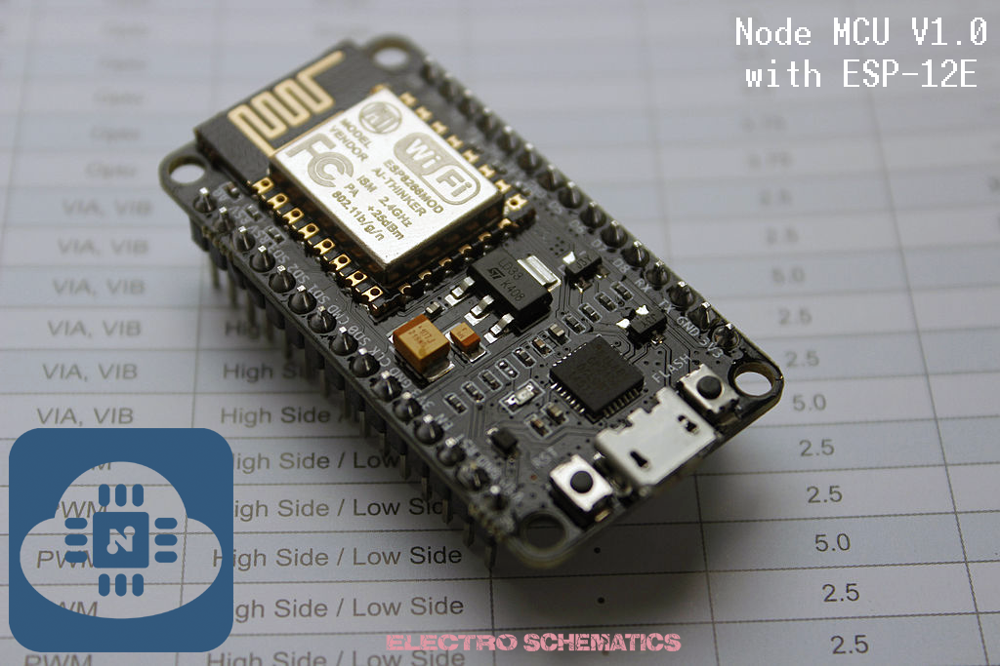
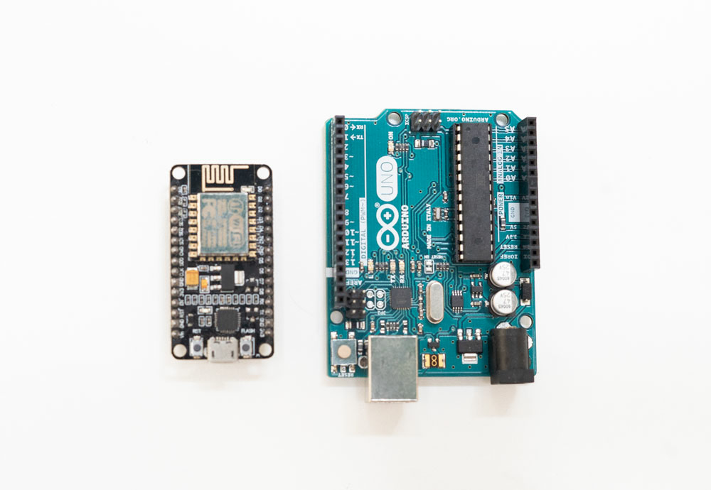
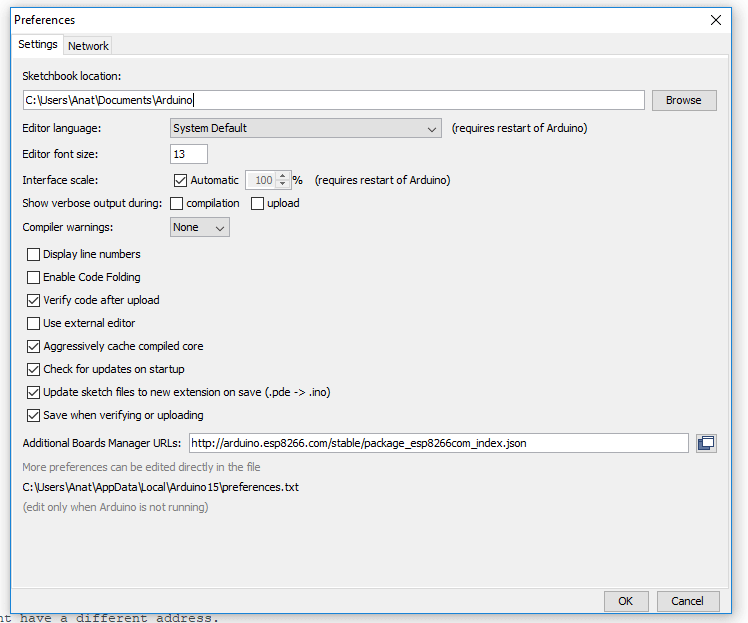
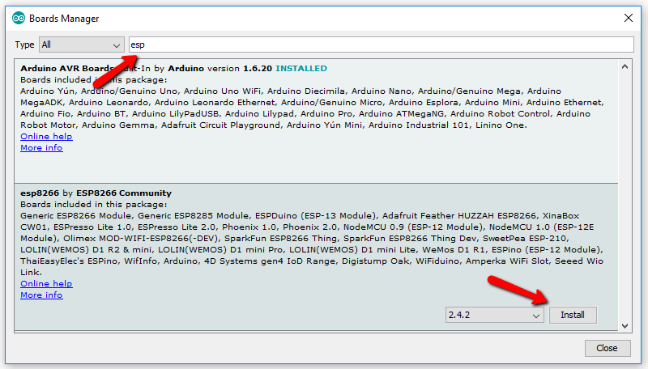

Introduction to NodeMCU
25 October, 2019
The NodeMCU development board is a powerful solution to program microcontrollers and be part of the Internet of Things (IoT). The NodeMCU development board, based on ESP8266EX, is a module with a microcontroller, integrated Wi-Fi receiver, and transmitter. NodeMCU supports several programming languages; hence, it is very easy to upload programs from any computer over a micro-USB port. I have been playing with the NodeMCU for quite a while now and, I have to say, it is a lot more fun than the other available IoT modules. When it comes to prototyping — just another perfect, relatively cheap, easy-to-learn, and user-friendly minuscule magic module!
NodeMCU V1.0
The first generation of the NodeMCU Development Kit had the version number V0.9. The second generation had the version number V1.0, and this newer version used ESP-12E (not ESP-12), which comes with 4 MB of flash memory. The new version comes with the CP2102 serial chip (not CH340) and it works really well and without a hassle. However, I noticed that, when it comes to many Chinese online vendors, there’s a blurring mix-up of generation and version names. The common name used by them for version 1.0 is V2, and most of those V2 boards are fabricated by or at least marked with “Amica.” Technically, it’s “NodeMCU V1.0 with ESP-12E module!”

NodeMCU First Run
NodeMCU is a complete environment of hardware and software for IoT prototyping based on the Lua language. You can connect NodeMCU to your computer through a standard USB interface for power, programming, and debugging. Before using NodeMCU V1.0 for the first time, install the requisite USB driver (CP210x) on the operating system of your computer:Download it from: here

Next, connect NodeMCU, run PuTTY to enter its Lua shell, and enter the test code to test the onboard LED in NodeMCU (also see following images). If everything is okay, you should able to connect NodeMCU with PuTTY, enter Lua shell, and test the on/off functions of the onboard blue indicator. If NodeMCU has no response in the PuTTY terminal, try to press the RST button on NodeMCU.
Comparing NodeMCU to Arduino
So, why would you choose to use a NodeMCU when the more widely-documented Arduino is around? Well, the NodeMCU has several distinct advantages. Before we detail them, however, we should state that the NodeMCU, technically, isn’t a device, but rather the firmware that loads onto one. In practice, you’ll see the NodeMCU firmware available for sale pre-loaded onto the board. If you already have an ESP8266, all of the connectivity options we’ll run through here will still apply.

There have been many different ESP modules over the years, each with their own advantages and drawbacks. There have been just two types of NodeMCU boards, however: versions 0.9 and 1.0. The 0.9 version is blue and comes loaded with the ESP-12 chip, while the 1.0 is black, and comes with the ESP-12E (which stands for ‘enhanced’). There are several key differences between the two chips, the most notable being that the later version comes with 22 pins and the earlier one comes with just 16.
Given that the ESP8266 is a more recent release than the Arduino, it’s not surprising that it has stronger specs. There’s a 32-bit RISC processor clocked at 80MHz, along with a generous RAM complement and support for up to 16mb of external flash storage. The device is especially useful for IoT applications, thanks to its tiny footprint and built-in WiFi support.
In all other aspects, however, the ESP is pretty much similar to the Arduino. There’s an on-board voltage regulator that ensures the cleanest possible power to the MCU itself, as well as a push-button reset and a USB connection for easy interface with your computer
Programming NodeMCU with Arduino IDE
The fact that NodeMCU can be reprogrammed using the Arduino IDE makes it especially convenient. But before you can get started, you’ll need to first configure the IDE to recognize the new board.
Let’s run through the process:
- Open Arduino IDE and navigate to file -> preferences
- In the space marked “additional Boards Manager URLs” add the following url: http://arduino.esp8266.com/stable/package_esp8266com_index.json 
- Click “OK”
- Navigate to the Boards Manager. You’ll find it under Tools>Board>Boards Manager.
- Type “ESP8266” into the resulting search bar. Then install the package. 
- Select the exact model. Go to Tools>Board and select “NodeMCU1.0 (ESP-12E module).”
You’re now ready to start uploading code to your ESP, and take advantage of all the great connectivity features we’ve been through!
NodeMCU Links